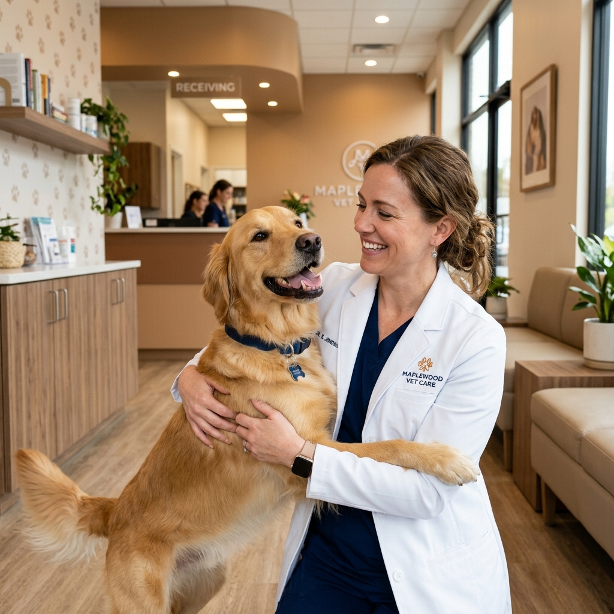

Vacunación & Prevención
Esquemas de vacunación completos, desparasitación interna y externa adaptados a cachorros, adultos y senior.
Ofrecemos atención médica integral, cirugías especializadas, laboratorio de precisión y peluquería canina/felina para proteger la salud de tu mascota.

Instalaciones modernas y equipo multidisciplinario listo para atender cualquier necesidad de tu peludo.
Esquemas de vacunación completos, desparasitación interna y externa adaptados a cachorros, adultos y senior.
Baños medicados, corte higiénico y de raza, cepillado profundo y spa relajante con cosmética veterinaria.
Quirófano moderno equipado con monitoreo anestésico, esterilizaciones y cirugías especializadas de tejido blando.
Módulos de estancia tranquilos con fluidoterapia, oxígeno y monitoreo continuo por personal médico presencial.
Laboratorio clínico en sede, hemogramas, perfiles bioquímicos, ecografía y ecocardiograma de alta resolución.
Atención cercana a cargo de la Dra. Mónica Blandón y el Dr. Diego, resolviendo dudas con ética y transparencia.
Experiencia clínica sólida y vocación de servicio al cuidado de tus animales de compañía.
Amplia trayectoria en medicina interna, pediatría canina/felina y orientación preventiva para tutores.
Especialista en procedimientos de tejidos blandos, emergencias 24/7 y cuidados intensivos veterinarios.
Estamos ubicados estratégicamente para atender cualquier consulta de rutina o urgencia médica.
Atención Médica & Urgencias 24 Horas / 7 Días a la semana.